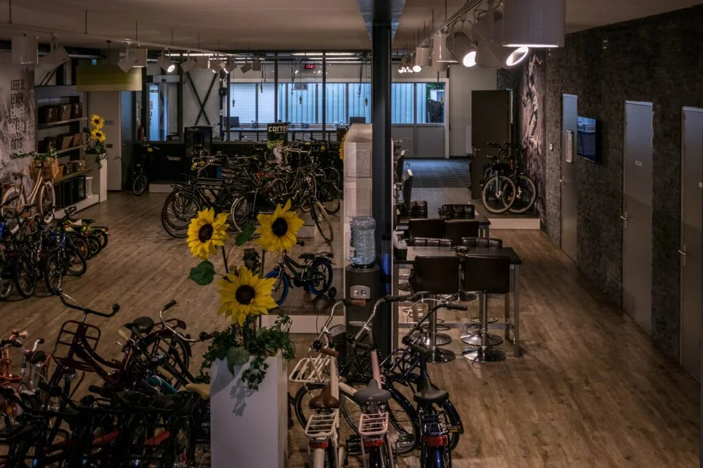

Een fiets uitzoeken, een proefrit bespreken of onderhoud laten uitvoeren? U krijgt bij Tieks rechtstreeks contact met de winkel. Bel ons of stuur eenvoudig een e-mail.
Bekijk onze gratis haal- en brengservice en controleer of uw adres binnen ons servicegebied ligt.
Bekijk gratis haal- en brengservice →